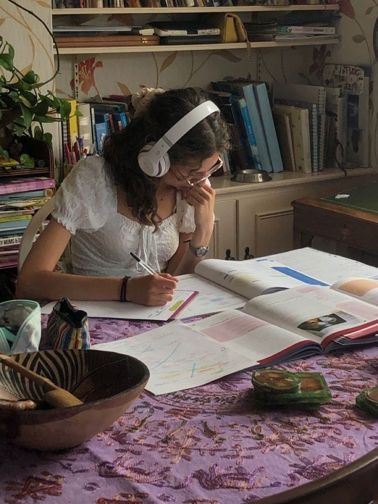

Aqui você encontra dicas práticas, para aprimorar suas ablidades línguisticas.
GlobalSpeaker nasceu da jornada de um grupo de especialistas que, através de diferentes processos de aprendizagem, acumularam habilidades notáveis de memorização e prática avançada da fala. Nosso objetivo é facilitar a vida de quem busca aprender um novo idioma, superando obstáculos como a falta de recursos financeiros, a dificuldade de encontrar um curso de qualidade ou até mesmo a procrastinação. Após anos de dedicação para reunir esse conhecimento, gostaríamos de compartilhá-lo com o mundo. Aqui, você encontrará dicas práticas e eficazes, desenvolvidas por poliglotas de diversas partes do mundo, que podem ser adaptadas a qualquer idioma que você deseje aprender. Nossa missão é transformar você em um "palestrante global" — um GlobalSpeaker.
Aprender um novo idioma é o objetivo de muitas pessoas e desafiador para outras. Mas aprender um novo idioma além de melhorar significativamente seu currículo, Pode ser beneficial para a saúde do cérebro, pois com o aprendizado de uma nova língua isso faz com que nosso cérebro consiga criar novas conexões neurais além de fortalece as existentes, ajudando também na memória e na consentração. Não se trata apenas de aprender grámatica e vocabulário aprender uma nova linguagem pode abrir portas para diferentes oportunidades na sua vida.além de ser um hobby que é muito interessante.
Falar uma nova língua, mesmo que de forma básica, pode demonstrar respeito e interesse pela cultura de diferentes pessoas e países. Além disso, ajuda a se comunicar e a se conectar a diferentes pontos de vista.
Para aqueles que têm familiares ou ancestrais em outro país, aprender o idioma pode ser uma maneira de se reconectar com suas raízes, conversar com parentes mais velhos e descobrir mais sobre a sua própria história. Já na área de negócios, com um mercado de trabalho cada vez mais competitivo e globalizado, a capacidade de se comunicar em outro idioma é um diferencial enorme, podendo abrir oportunidades de trabalhar até mesmo no exterior.